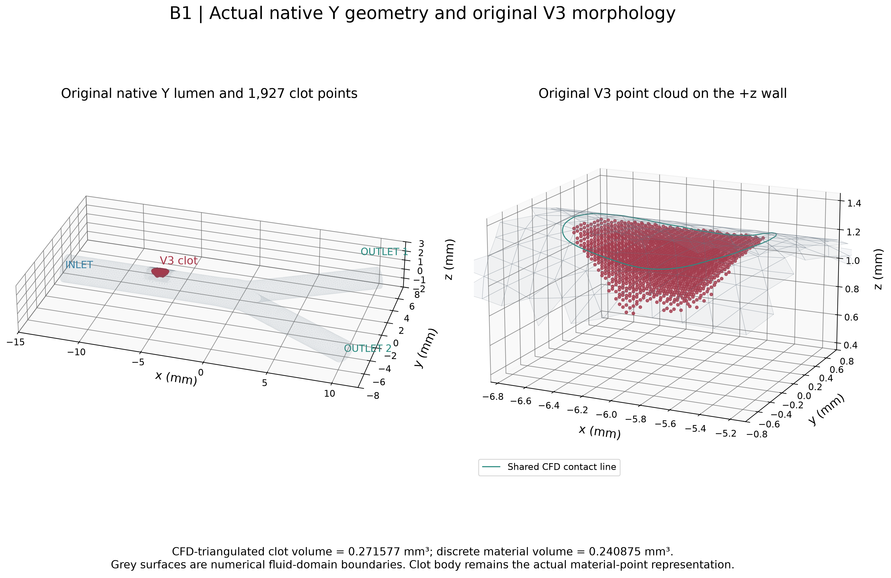
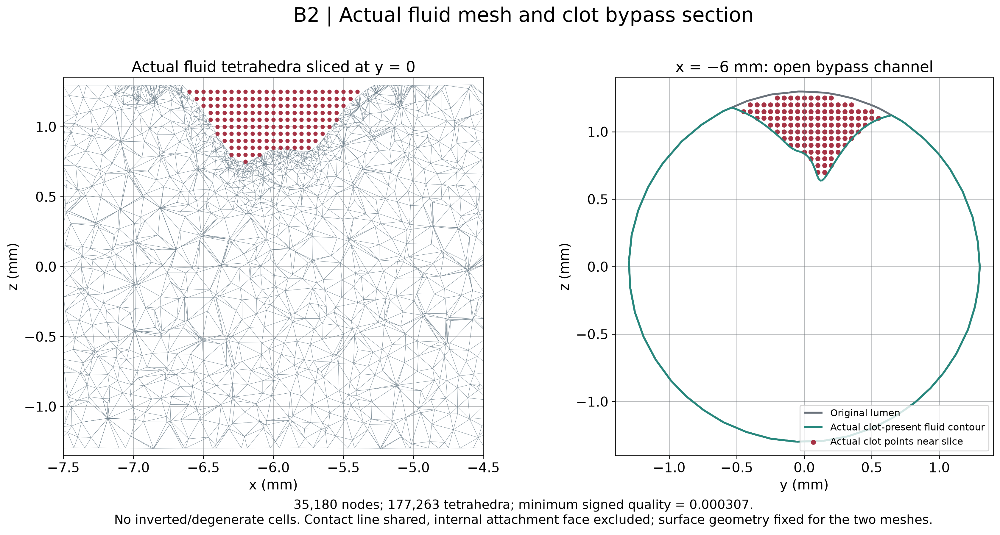
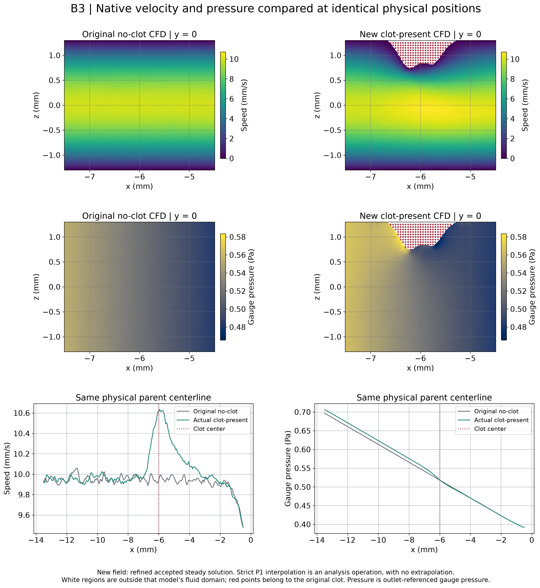
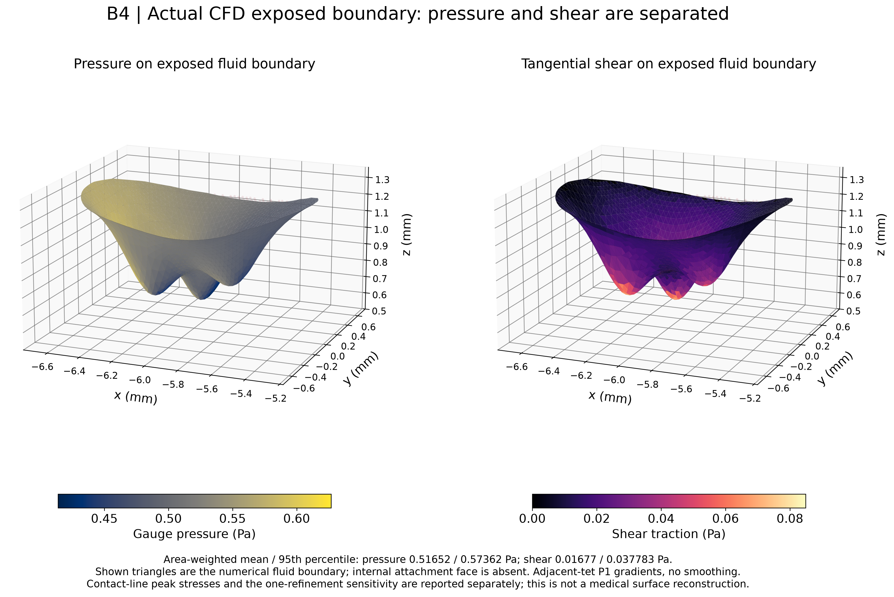
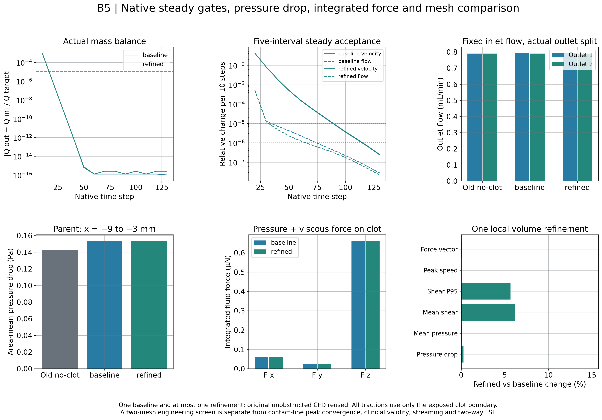
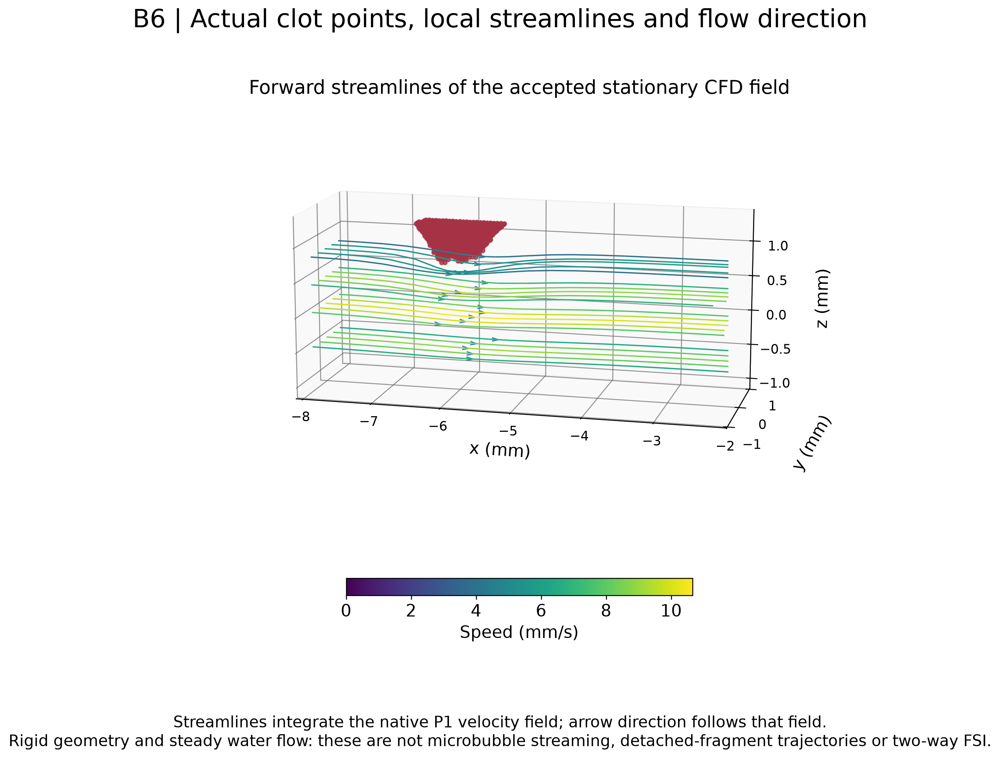
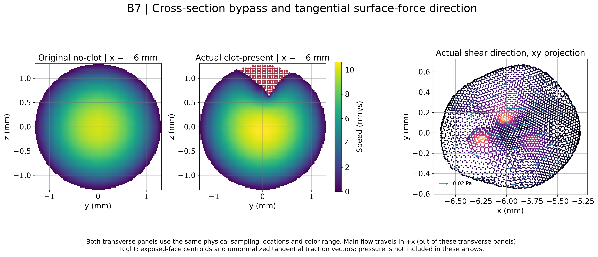

基线与一次局部加密均通过；牵引已提取，15% 工程网格筛查通过。刚性背景流，不含 streaming 或双向 FSI。
run_id：20261011T154854Z
总索引 · 中文科研报告（12 项回答） · 状态 JSON · 冻结方案
| 分项 | 状态 |
|---|---|
| CLOT_PRESENT_GEOMETRY_VALIDITY | PASS_ORIGINAL_V3_ANALYTIC_DEFINITION |
| CFD_MESH_VALIDITY | PASS_CLOSED_LABELLED_POSITIVE_VOLUME |
| STEADY_FLOW_SOLVER | PASS_NATIVE_LINEAR_NONLINEAR_AND_STEADY_GATES |
| MASS_BALANCE | PASS_FROZEN_1E_MINUS5 |
| CLOT_SURFACE_PRESSURE | EXTRACTED_GAUGE_PRESSURE |
| CLOT_SURFACE_SHEAR_TRACTION | EXTRACTED_P1_ADJACENT_ELEMENT_GRADIENT |
| INTEGRATED_FLUID_FORCE | PASS_EXPOSED_SURFACE_INTEGRAL_AND_MATH_AUDIT |
| MESH_SENSITIVITY | PASS_ENGINEERING_SCREEN |
| BASELINE_COMPARABILITY | PASS_SAME_SUPPLY_AND_NATIVE_Y_WITH_STATED_MESH_LIMITS |
| STREAMING_NOT_INCLUDED | True |
| TWO_WAY_FSI_NOT_INCLUDED | True |







完整原始结果留在服务器：/workspace/y_clot/project/verification/y_clot_present_cfd_baseline_v1/20261011T154854Z；本地回收范围见总索引的 COMPACT_MANIFEST.json。